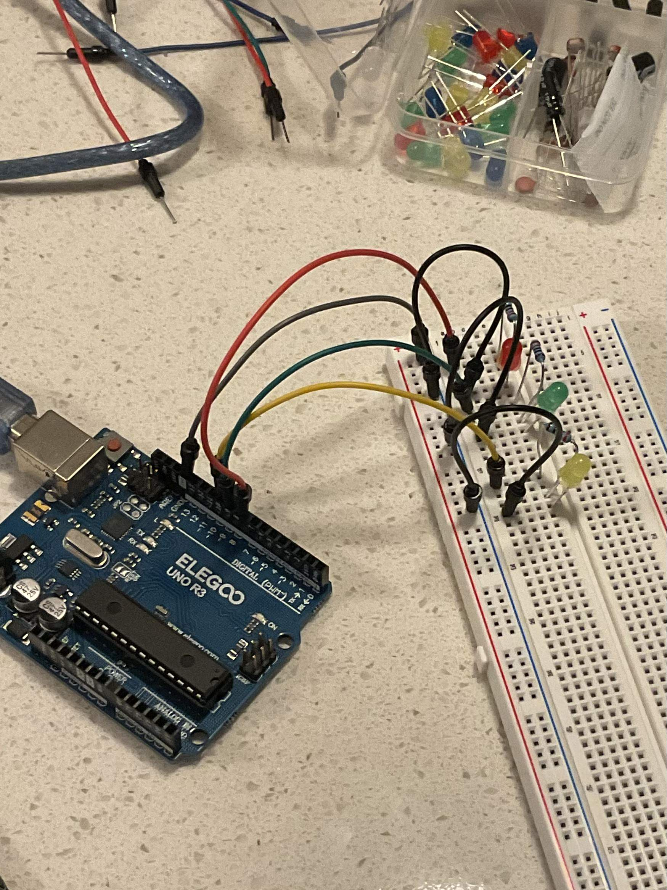
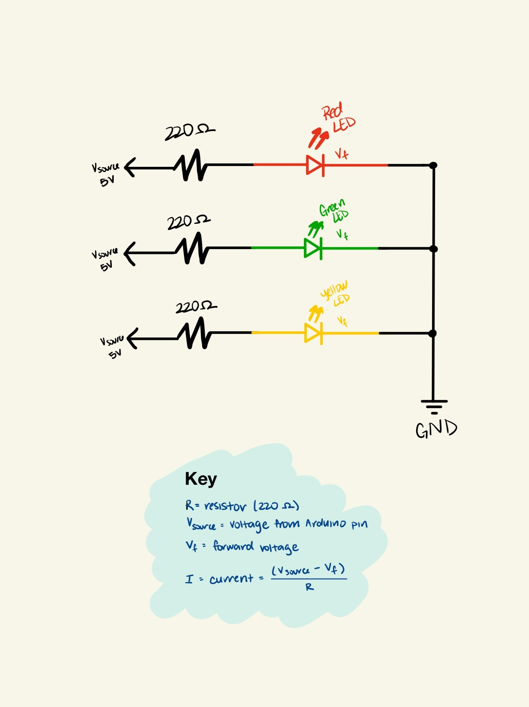
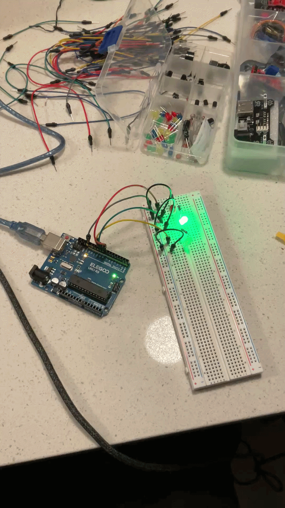
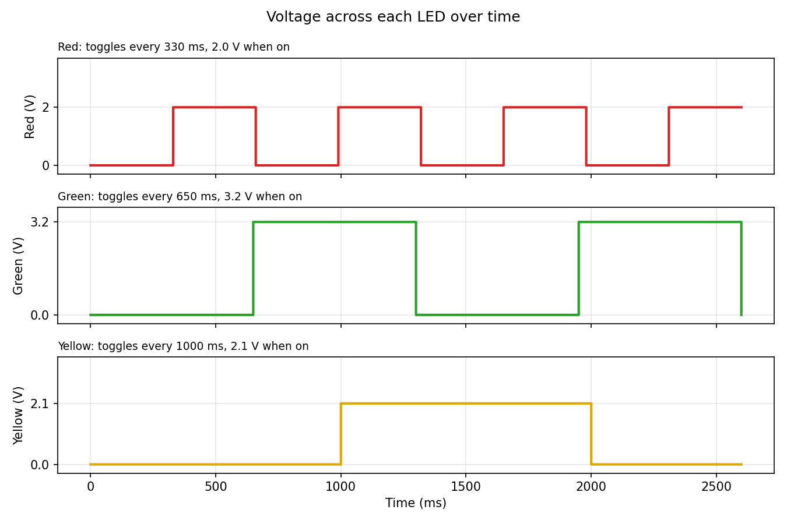

Assignment 1: Blinking Holiday Lights
Three LEDs on an Arduino Uno, each blinking independently at its own rate.
1. Schematic and breadboard


2. Current-limiting resistor calculations
To keep each pin's current at about 15 mA (0.015 A) from a 5 V output, each resistor is sized with Ohm's law:
| LED | Forward voltage | Calculation | Resistor used |
|---|---|---|---|
| Red | ≈ 2.0 V | (5 − 2.0) / 0.015 = 200Ω | 220Ω |
| Yellow | ≈ 2.1 V | (5 − 2.1) / 0.015 = 193.3Ω | 220Ω |
| Green | ≈ 3.2 V | (5 − 3.2) / 0.015 = 120Ω | 220Ω |
Each value is rounded up to the next standard resistor, so the real current is slightly under 15 mA.
3. Circuit in action

4. Firmware
The code checks elapsed time with millis() instead of delay(), so no LED has to wait for another and each blinks at its own rate.
// Define the digital output pin connected to the Red LED
const int redLedPin = 8;
// Define the digital output pin connected to the Green LED
const int greenLedPin = 9;
// Define the digital output pin connected to the Yellow LED
const int yellowLedPin = 10;
// Track the current on/off state of the Red LED
int redState = LOW;
// Track the current on/off state of the Green LED
int greenState = LOW;
// Track the current on/off state of the Yellow LED
int yellowState = LOW;
// Store the exact timestamp when the Red LED last updated its state
unsigned long previousRedMillis = 0;
// Store the exact timestamp when the Green LED last updated its state
unsigned long previousGreenMillis = 0;
// Store the exact timestamp when the Yellow LED last updated its state
unsigned long previousYellowMillis = 0;
// Set the independent blink interval rate for the Red LED in milliseconds
const long redInterval = 330;
// Set the independent blink interval rate for the Green LED in milliseconds
const long greenInterval = 650;
// Set the independent blink interval rate for the Yellow LED in milliseconds
const long yellowInterval = 1000;
// Run the initial hardware initialization routine upon device startup
void setup() {
// Configure the designated Red LED pin as an electrical output signal
pinMode(redLedPin, OUTPUT);
// Configure the designated Green LED pin as an electrical output signal
pinMode(greenLedPin, OUTPUT);
// Configure the designated Yellow LED pin as an electrical output signal
pinMode(yellowLedPin, OUTPUT);
}
// Execute the main program cycle repeatedly while the Arduino remains powered
void loop() {
// Retrieve and capture the number of milliseconds passed since the board started running
unsigned long currentMillis = millis();
// Check if the elapsed time exceeds the defined interval threshold for the Red LED
if (currentMillis - previousRedMillis >= redInterval) {
// Overwrite the previous Red timestamp with the current running system time
previousRedMillis = currentMillis;
// Toggle the Red state variable between HIGH and LOW values
if (redState == LOW) {
// Switch the state tracking value to HIGH if it was previously LOW
redState = HIGH;
} else {
// Switch the state tracking value to LOW if it was previously HIGH
redState = LOW;
}
// Apply the updated state value directly to the Red LED hardware pin
digitalWrite(redLedPin, redState);
}
// Check if the elapsed time exceeds the defined interval threshold for the Green LED
if (currentMillis - previousGreenMillis >= greenInterval) {
// Overwrite the previous Green timestamp with the current running system time
previousGreenMillis = currentMillis;
// Toggle the Green state variable between HIGH and LOW values
if (greenState == LOW) {
// Switch the state tracking value to HIGH if it was previously LOW
greenState = HIGH;
} else {
// Switch the state tracking value to LOW if it was previously HIGH
greenState = LOW;
}
// Apply the updated state value directly to the Green LED hardware pin
digitalWrite(greenLedPin, greenState);
}
// Check if the elapsed time exceeds the defined interval threshold for the Yellow LED
if (currentMillis - previousYellowMillis >= yellowInterval) {
// Overwrite the previous Yellow timestamp with the current running system time
previousYellowMillis = currentMillis;
// Toggle the Yellow state variable between HIGH and LOW values
if (yellowState == LOW) {
// Switch the state tracking value to HIGH if it was previously LOW
yellowState = HIGH;
} else {
// Switch the state tracking value to LOW if it was previously HIGH
yellowState = LOW;
}
// Apply the updated state value directly to the Yellow LED hardware pin
digitalWrite(yellowLedPin, yellowState);
}
}5. Questions
Q1: Voltage across each LED over time

Each LED is a square wave between 0 V (off) and its forward voltage (on). Red toggles every 330 ms between 0 V and 2.0 V. Green toggles every 650 ms between 0 V and 3.2 V. Yellow toggles every 1000 ms between 0 V and 2.1 V.
Q2: How many LEDs, and how much current?
An Arduino Uno has 20 digital pins (0 to 13, plus A0 to A5), so it could blink up to 20 LEDs independently. The chip can only supply about 200 mA in total. At 15 mA each, 20 LEDs would draw 300 mA, which is too much. To run all 20 safely, each LED would need to draw 10 mA or less, which means using larger resistors.
Q3: Flicker fusion threshold
I think a blinking light would need to blink at an interval of 10 ms or less (10 ms on, 10 ms off) to look like a steady light.
Q4: AI tool reflection
I used an AI tool to help structure my arduino timing code and to check the resistor calculations for the different forward voltages of each LED color. It also assisted me with the layout of this documentation page.